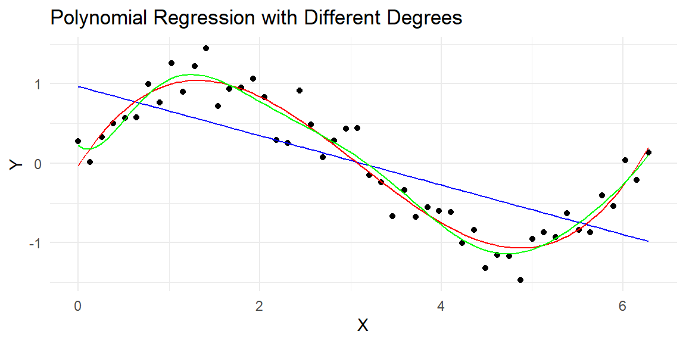
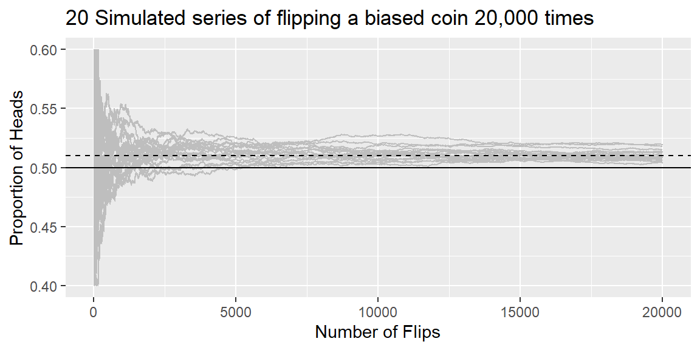

Ensemble learning is a powerful technique in predictive analytics and machine learning that combines multiple models to improve the accuracy and robustness of predictions. By leveraging the strengths and compensating for the weaknesses of individual models, ensemble methods can achieve higher performance than any single model could on its own.
Ensemble learning stands out as a meta-algorithmic framework that strategically combines multiple predictive models to construct a more accurate and stable composite model. This approach has proven to be a game-changer in enhancing the performance of machine learning tasks, effectively addressing complex challenges such as overfitting, variance, and bias.
The concept of ensemble learning is not entirely new; its roots can be traced back to the late 20th century when the foundational principles of aggregating different models to improve overall performance were first explored. Since then, the field has seen substantial growth, driven by both theoretical advancements and practical successes in various domains, including but not limited to finance, healthcare, and image recognition.
6.2 Bias-Variance Trade-off
The bias-variance trade-off is a fundamental concept in machine learning that describes the tension between the error introduced by the model’s assumptions about the underlying data structure (bias) and the error introduced by sensitivity to fluctuations in the training set (variance). Understanding this trade-off is crucial for developing models that generalize well to unseen data.
Bias
Bias refers to the error due to overly simplistic assumptions in the learning algorithm. High bias can cause the model to miss relevant relations between features and target outputs (underfitting), leading to poor performance on both the training and test data.
Variance
Variance refers to the error due to too much complexity in the learning algorithm. High variance can cause the model to model the random noise in the training data (overfitting), leading to poor generalization to new data.
Trade-off
Ideally, one wants to choose a model that both accurately captures the regularities in its training data and generalizes well to unseen data. However, in practice, there is often a trade-off between bias and variance. Increasing a model’s complexity will typically decrease bias but increase variance. Conversely, reducing a model’s complexity increases its bias but decreases its variance. The goal is to find the right balance between bias and variance, minimizing the total error.
Example
Let’s illustrate the bias-variance trade-off with a simple example in R. We will use polynomial regression to fit a model to synthetic data. This example demonstrates how increasing the polynomial degree (model complexity) affects the bias and variance of the model predictions.
First, we’ll generate some synthetic data that follows a sine curve with some added noise:
Next, we’ll fit polynomial regression models of varying degrees to this data and visualize how model complexity influences the fit:
# Function to fit and predict using polynomial regressionnewdat=data_frame(x=seq(0, 2*pi, length.out=100))predict_poly=function(degree){model=lm(y~poly(x, degree, raw=TRUE), data =dat)return(predict(model, newdat))}newdat=bind_cols(newdat, deg1 =predict_poly(1), deg3 =predict_poly(3), deg10 =predict_poly(10),)# Plotting the data and models of different degreesdat|>ggplot(aes(x=x, y=y))+geom_point()+geom_line(data =newdat, aes(x=x, y=deg1), color='blue')+geom_line(data =newdat, aes(x=x, y=deg3), color='red')+geom_line(data =newdat, aes(x=x, y=deg10), color='green')+labs(title="Polynomial Regression with Different Degrees", x="X", y="Y")+scale_color_manual(values=c("blue", "red", "green"))+theme_minimal()

In this example:
A low-degree polynomial (blue line) may not capture the underlying trend well, exhibiting high bias and low variance.
A moderate-degree polynomial (red line) might strike a good balance, capturing the underlying trend while not being too sensitive to the noise in the data.
A high-degree polynomial (green line) might fit the training data very closely, capturing the noise as if it were a signal, thus exhibiting low bias but high variance.
By adjusting the complexity of the model (in this case, the degree of the polynomial), we can observe the impact on bias and variance, illustrating the bias-variance trade-off. The key in practice is to find the complexity level that minimizes the total error on unseen data.
6.3 Voting Classifiers
Imagine you’ve developed several classifiers, each achieving an accuracy of around 80%. Among these, you have a diverse array: a Logistic Regression classifier, an SVM classifier, and potentially others. A straightforward strategy to enhance classification performance is to combine the predictions from each of these classifiers and select the class that receives the most votes. This method, known as a hard voting classifier, can lead to a composite classifier that outperforms even the most accurate member of the ensemble.
Surprisingly, a voting classifier can achieve higher precision than any individual classifier in the group. This improvement in accuracy occurs even if each classifier performs only marginally better than chance. With a large and diverse set of such weak learners, the ensemble can become a strong learner, capable of high accuracy. How does this phenomenon occur? Consider the following analogy for clarity.
Imagine a coin that is slightly biased, with a 51% chance of landing heads and a 49% chance of landing tails. If you flip this coin 1,000 times, you’re likely to observe around 510 heads and 490 tails, leading to a majority of heads. Calculations reveal that the likelihood of seeing more heads than tails after 1,000 flips is about 75%. This probability increases with the number of flips, exceeding 97% after 10,000 flips. This outcome is a result of the law of large numbers, which posits that as the number of flips increases, the proportion of heads approaches the true likelihood of a head flip (51%).
We can visualize this by simulating a slightly biased coin in R.
library(tidyverse)n=20000set.seed(1004)flips=rbinom(n, 1, .51)ratio_heads=cummean(flips)dat=tibble(flip =1:n, ratio_heads, sim =1)for(iin2:20){flips=rbinom(n, 1, .51)ratio_heads=cummean(flips)dat=bind_rows(dat, tibble(flip =1:n, ratio_heads, sim =i))}dat|>ggplot(aes(x =flip, y =ratio_heads, group =sim))+geom_line(col ="gray")+ylim(.4, .6)+geom_hline(yintercept =.5)+geom_hline(yintercept =.51, lty =2)+ylab("Proportion of Heads")+xlab("Number of Flips")+ggtitle("20 Simulated series of flipping a biased coin 20,000 times")

Applying this principle to ensemble learning, consider an ensemble of 1,000 classifiers, each with a 51% chance of making the correct prediction (just above random chance). By aggregating their predictions and choosing the class with the majority vote, you might expect accuracy rates as high as 75%. This scenario assumes, however, that all classifiers make independent errors, an idealization not often met since the classifiers are trained on the same data and may make similar mistakes. Consequently, the likelihood of incorrect majority votes increases, potentially lowering the ensemble’s overall accuracy.
Soft Voting
When your classifiers are capable of estimating class probabilities you can leverage a technique known as soft voting. Soft voting calculates the class with the highest average probability across all classifiers, potentially leading to more accurate ensemble predictions. This method can outperform hard voting because it assigns greater influence to predictions made with high confidence.
6.4 Bagging and Pasting
Achieving a diverse collection of classifiers can be accomplished in two primary ways: employing a variety of training algorithms or using a single algorithm but training it on distinct random subsets of the training data. The latter approach manifests in two techniques: bagging and pasting, based on how samples are drawn from the training set.
Bagging—short for bootstrap aggregating—involves drawing random subsets of the training set with replacement. That means the same training instance can appear multiple times in the same subset. Pasting, on the other hand, draws subsets without replacement, ensuring that training instances don’t repeat within a subset.
The essence of both bagging and pasting is to permit each model in the ensemble to learn from a slightly different perspective of the data, thereby introducing diversity. While bagging allows the same data point to be used multiple times by the same predictor, pasting does not.
Once training is complete, the ensemble predicts new instances by aggregating the outcomes of all models. For classification tasks, this aggregation typically involves selecting the most common prediction (analogous to a hard voting classifier), whereas for regression tasks, the average prediction is used. Although each model may exhibit higher bias when trained on a subset of the training data, the aggregation process tends to decrease both bias and variance. The result is an ensemble that generally retains a similar bias but exhibits a lower variance compared to a model trained on the entire training set.
A significant advantage of bagging and pasting is their scalability. Since each model can be trained independently on a separate subset of data, the training process can be easily parallelized across multiple CPU cores or different servers. This parallelization extends to making predictions, making bagging and pasting highly efficient and popular for building scalable ensemble models.
6.5 Key Concepts of Ensemble Learning
Diversity: The core idea behind ensemble learning is to create a group of diverse models. Diversity among models can arise from using different algorithms, training on different subsets of data, or varying the input features. This diversity enables the ensemble to capture various aspects of the data, reducing the likelihood of overfitting and improving generalization to unseen data.
Aggregation: Once a collection of models is created, their predictions are aggregated to produce a final ensemble prediction. The aggregation method depends on the task (classification or regression) and can range from simple techniques like voting or averaging to more complex methods like weighted averaging.
Bias-Variance Tradeoff: Ensemble learning helps in balancing the bias-variance tradeoff. High bias can lead to underfitting, where the model is too simple to capture the underlying structure of the data. High variance can lead to overfitting, where the model captures noise as if it were a signal. Ensembles, by combining multiple models, can reduce variance without significantly increasing bias, leading to more accurate predictions.
6.6 Random Forests
Random Forests are one of the most popular and powerful ensemble learning methods, applicable to both classification and regression tasks. A Random Forest builds upon the Decision Tree algorithm, creating an ensemble of trees to improve predictive performance.
How Random Forests Work
Bootstrap Aggregating (Bagging): Random Forests use bagging, where multiple trees are trained on different bootstrap samples of the data. A bootstrap sample is a random sample of the training data, drawn with replacement, which means some observations may be repeated in each sample.
Feature Randomness: When building each tree, Random Forests introduce additional randomness by considering a random subset of features at each split. This approach ensures that the trees are de-correlated, reducing the ensemble’s variance without significantly increasing bias.
Aggregation of Predictions:
For classification, the Random Forest aggregates the predictions of all trees through majority voting. Each tree votes for a class, and the class with the most votes becomes the model’s prediction.
For regression, it averages the predictions of all trees. The final output is the mean of the predictions from all the trees in the forest.
Advantages of Random Forests
High Accuracy: By combining multiple trees, Random Forests can achieve high accuracy, often outperforming individual decision trees.
Robustness to Overfitting: Thanks to the randomness introduced during tree building and the aggregation of multiple predictions, Random Forests are less prone to overfitting than individual decision trees.
Versatility: They can handle both numerical and categorical data, work well with both small and large datasets, and can be used for both classification and regression tasks.
Feature Importance: Random Forests can provide insights into which features are most important in predicting the target variable.
Limitations
Complexity and Interpretability: A Random Forest model can be more complex and less interpretable than a single decision tree.
Computationally Intensive: Training a large number of trees on large datasets can be computationally expensive, requiring significant resources.
Example: Iris data
The Iris dataset consists of 150 observations of iris flowers, each with 4 features (sepal length, sepal width, petal length, and petal width) and classified into one of three species (setosa, versicolor, virginica).
The engine for fitting a random forest is in the ranger library.
data(iris)set.seed(123)# For reproducibility# Split the data into training and testing setsiris_split=initial_split(iris, prop =0.75)iris_train=training(iris_split)iris_test=testing(iris_split)#setup data for cross validation to tune the modeldat_folds=vfold_cv(iris_train, v =5, strata =Species)
Create the model and recipe. Note that there are two hyperparameters we need to determine for random forests. They are:
mtry which is the number of predictors that will be randomly sampled at each split when creating the tree models.
min_n1 which is the minimum number of observations in a node that are required for the node to be split further.
We will fine tune these hyperparameters using cross validation.
rf_model=rand_forest(trees =100, mtry =tune(), min_n =tune())|>set_engine("ranger")|>set_mode("classification")recipe=recipe(Species~., data =iris_train)
Fine tune the model:
tuning_grid=grid_regular(mtry(range =c(1, 4)), #there are four possible features in this datasetmin_n(), levels =10)#fine tune the modeltune_results=tune_grid( object =workflow()|>add_recipe(recipe)|>add_model(rf_model), resamples =dat_folds, grid =tuning_grid)best_params=select_best(tune_results, metric ="accuracy")best_params
# Make predictionspredictions=predict(fitted_model, iris_test)|>bind_cols(iris_test)# Evaluate the modeltest_metrics=metrics(predictions, truth =Species, estimate =.pred_class)test_conf_mat=conf_mat(predictions, truth =Species, estimate =.pred_class)print(test_metrics)
# A tibble: 2 × 3
.metric .estimator .estimate
<chr> <chr> <dbl>
1 accuracy multiclass 0.974
2 kap multiclass 0.959
Ensemble learning, with Random Forests as a prime example, represents a potent set of techniques in the field of predictive analytics. By harnessing the power of multiple models, ensemble methods can deliver superior predictive performance, making them a crucial tool in the data scientist’s arsenal. Understanding and applying ensemble methods, such as Random Forests, can greatly enhance the effectiveness of predictive models in classification and regression tasks.